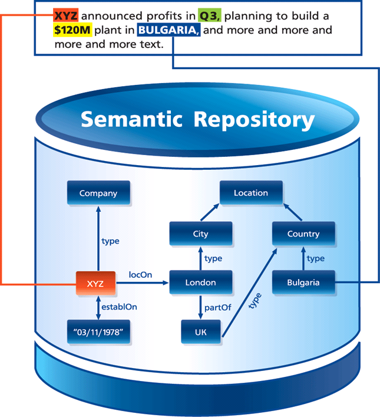
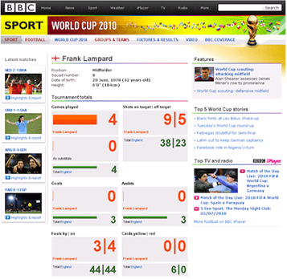
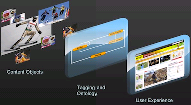

Publishing and media businesses are going through transformation
I took this picture in June 2010 next to Union Square in San Francisco. I was smoking and wrestling my jetlag in front of Hilton. In the lobby inside the SemTech 2010 conference attendants were watching a game from the FIFA World Cup in South Africa. In the picture, the self-service newspaper stand is empty, except for one free paper. It was not long ago, in the year 2000, this stand was full. Back than the people in the Bay area were willing to pay for printed newspapers. But this is no longer true.
What’s driving this change in publishing and media?
-
Widespread and instantaneous distribution of information over the Internet has turned news into somewhat of a “commodity” and few people are willing to pay for it
-
The wealth of free content on YouTube and similar services spoiled the comfort of many mainstream broadcasters;
-
Open access publishing has limited academic publishers to sell journals and books at prices that were considered fair ten years ago.
Alongside other changes in the industry, publishers figured out that it is critical to add value through better authoring, promotion, discoverability, delivery and presentation of precious content.
Imagine instant news in context, Imagine personal channels, Imagine … triplestores
While plain news can be created repeatedly, premium content and services are not as easy to create. Think of an article that not only tells the new facts, but refers back to previous events and is complemented by an info-box of relevant facts. It allows one to interpret and comprehend news more effectively. This is the well-known journalistic aim to put news in context. It is also well-known that producing such news in “near real time” is difficult and expensive using legacy processes and content management technology.
Another example would be a news feed that delivers good coverage of information relevant to a narrow subject – for example a company, a story line or a region. Judging by the demand for intelligent press clipping services like Factiva, such channels are in demand but are not straightforward to produce with today’s technology. Despite the common perception that automated recommendations for related content and personalized news are technology no-brainers, suggesting truly relevant content is far from trivial.
Finally, if we use an example in life sciences, the ability to quickly find scientific articles discussing asthma and x-rays, while searching for respiration disorders and radiation, requires a search service that is not easy to deliver.
Many publishers have been pressed to advance their business. This, in turn, had led to quest to innovate. And semantic technology can help publishers in two fundamental ways:
- Generation of rich and “meaningful” (trying not to use “semantic” :-) metadata descriptions; 1. Dynamic retrieval of content, based on this rich metadata, enabling better delivery.
In this post I write about “semantic annotation” and how it enables application scenarios like BBC’s Dynamic Semantic Publishing (DSP). I will also present the business case behind DSP. The final part of the post is about triplestores – semantic graph database engines, used in DSP. To be more concrete I write about the Semantic Publishing Benchmark (SPB), which evaluates the performance of triplestores in DSP scenarios.
Semantic Annotation produces Rich Metadata Descriptions – the fuel for semantic publishing
The most popular meaning of “semantic annotation” is the process of enrichment of text with links to (descriptions of) concepts and entities mentioned in the text. This usually means tagging either the entire document or specific parts of it with identifiers of entities. These identifiers allow one to retrieve descriptions of the entities and relations to other entities – additional structured information that fuels better search and presentation.

The concept of using text-mining for automatic semantic annotation of text with respect to very large datasets, such as DBPedia, emerged in early 2000. In practical terms it means using such large datasets as a sort of gigantic gazetteer (name lookup tool) and the ability to disambiguate. Figuring out whether “Paris” in the text refers to the capital of France or to Paris, Texas, or to Paris Hilton is crucial in such context. Sometimes this is massively difficult – try to instruct a computer how to guess whether “Hilton” in the second sentence of this post refers to a hotel from the chain founded by her grandfather or that I had the chance to meet Paris Hilton in person on the street in San Francisco.
Today there are plenty of tools (such as the Ontotext Media and Publishing platform and DBPedia Spotlight) and services (such as Thomson Reuter’s OpenCalais and Ontotext’s S4 that offer automatic semantic annotation. Although text-mining cannot deliver 100% correct annotations, there are plenty of scenarios, where technology like this would revoluntionize a business. This is the case with the Dynamic Semantic Publishing scenario described below.
The BBC’s Dynamic Semantic Publishing (DSP)
Dynamic Semantic Publishing is a model for using semantic technology in media developed by a group led by John O’Donovan and Jem Rayfield at the BBC. The implementation of DSP behind BBC’s FIFA World Cup 2010 website was the first high-profile success story for usage of semantic technology in media. It is also the basis for the SPB benchmark – sufficient reasons to introduce this use case at length below.
BBC Future Media & Technology department have transformed the BBC relational content management model and static publishing framework to a fully dynamic semantic publishing architecture. With minimal journalistic management, media assets are being enriched with links to concepts, semantically described in a triplestore. This novel semantic approach provides improved navigation, content re-use and re-purposing through automatic aggregation and rendering of links to relevant stories. At the end of the day DSP improves the user experience on BBC’s web site.
“A high-performance dynamic semantic publishing framework facilitates the publication of automated metadata-driven web pages that are light-touch, requiring minimal journalistic management, as they automatically aggregate and render links to relevant stories”. – Jem Rayfield, Senior Technical Architect, BBC News and Knowledge
The Dynamic Semantic Publishing (DSP) architecture of the BBC curates and publishes content (e.g. articles or images) based on embedded Linked Data identifiers, ontologies and associated inference. It allows for journalists to determine levels of automation (“edited by exception”) and support semantic advertisement placement for audiences outside of the UK. The following quote explains the workflow when a new article gets into BBC’s content management system.
“In addition to the manual selective tagging process, journalist-authored content is automatically analysed against the World Cup ontology. A natural language and ontological determiner process automatically extracts World Cup concepts embedded within a textual representation of a story. The concepts are moderated and, again, selectively applied before publication. Moderated, automated concept analysis improves the depth, breadth and quality of metadata publishing.

Journalist-published metadata is captured and made persistent for querying using the resource description framework (RDF) metadata representation and triple store technology. A RDF triplestore and SPARQL approach was chosen over and above traditional relational database technologies due to the requirements for interpretation of metadata with respect to an ontological domain model. The high level goal is that the domain ontology allows for intelligent mapping of journalist assets to concepts and queries. The chosen triplestore provides reasoning following the forward-chaining model and thus implied inferred statements are automatically derived from the explicitly applied journalist metadata concepts. For example, if a journalist selects and applies the single concept “Frank Lampard”, then the framework infers and applies concepts such as “England Squad”, “Group C” and “FIFA World Cup 2010” …” – Jem Rayfield
One can consider each of the “aggregation pages” of BBC as a sort of feed or channel serving content related to a specific topic. If you take this perspective, with its World Cup 2010 website BBC was able to provide more than 700 thematic channels.
“The World Cup site is a large site with over 700 aggregation pages (called index pages) designed to lead you on to the thousands of story pages and content
…we are not publishing pages, but publishing content as assets which are then organized by the metadata dynamically into pages, but could be re-organized into any format we want much more easily than we could before.

… The index pages are published automatically. This process is what assures us of the highest quality output, but still save large amounts of time in managing the site and makes it possible for us to efficiently run so many pages for the World Cup.” – John O’Donovan, Chief Technical Architect, BBC Future Media & Technology
To get a real feeling about the load of the triplestore behind BBC’s World Cup web site, here are some statistics:
-
800+ aggregation pages (Player, Team, Group, etc.), generated through SPARQL queries;
-
Average unique page requests/day: 2 million;
-
Average SPARQL queries/day: 1 million;
-
100s repository updates/inserts per minute with OWL 2 RL reasoning;
-
Multi data center that is fully resilient, clustered 6 node triplestore.
The Semantic Publishing Benchmark
LDBC’s Semantic Publishing Benchmark (SPB) measures the performance of an RDF database in a load typical for metadata-based content publishing, such as the BBC Dynamic Semantic Publishing scenario. Such load combines tens of updates per second (e.g. adding metadata about new articles) with even higher volumes of read requests (SPARQL queries collecting recent content and data to generate web pages on a specific subject, e.g. Frank Lampard).
SPB simulates a setup for media that deals with large volumes of streaming content, e.g. articles, pictures, videos. This content is being enriched with metadata that describes it through links to reference knowledge:
-
Reference knowledge: taxonomies and databases that include relevant concepts, entities and factual information (e.g. sport statistics);
-
Metadata for each individual piece of content allows publishers to efficiently produce live streams of content relevant to specific subjects.
In this scenario the triplestore holds both reference knowledge and metadata. The main interactions with the repository are of two types:
-
Aggregation queries retrieve content according to various criteria. There are two sets (mixes) of aggregation queries. The basic one includes interactive queries that involve retrieval of concrete pieces of content, as well as aggregation functions, geo-spatial and full-text search constraints. The analytical query mix includes analytical queries, faceted search and drill-down queries;
-
Updates, adding new metadata or updating the reference knowledge. It is important that such updates should immediately impact the results of the aggregation queries. Imagine a fan checking the page for Frank Lampard right after he scored a goal – she will be very disappointed to see out of date statistics there.
SPB v.1.0 directly reproduces the DSP setup at the BBC. The reference dataset consists of BBC Ontologies (Core, Sport, News), BBC datasets (list of F1 teams, MPs, etc.) and an excerpt from Geonames for the UK. The benchmark is packed with metadata generator that allows one to set up experiments at different scales. The metadata generator produces 19 statements per Creative Work (BBC’s slang for all sorts of media assets). The standard scale factor is 50 million statements.
A more technical introduction to SPB can be found in this post. Results from experiments with SPB on different hardware configurations, including AWS instances, are available in this post. An interesting discovery is that given the current state of the technology (particularly the GraphDB v.6.1 engine) and today’s cloud infrastructure, the load of BBC’s World Cup 2010 website can be handled at AWS by a cluster that costs only $81/day.
Despite the fact that SPB v.1.0 follows closely the usage scenario for triplestores in BBC’s DSP incarnations, it is relevant to a wide range of media and publishing scenarios, where large volumes of “fast flowing” content need to be “dispatched” to serve various information needs of a huge number of consumers. The main challenges can be summarized as follows:
-
The Triplestore is used as operational database serving a massive number of read queries (hundreds of queries per second) in parallel with tens of update transactions per second. Transactions need to be handled instantly and in a reliable and consistent manner;
-
Reasoning is needed to map content descriptions to queries in a flexible manner;
-
There are specific requirements, such as efficient handling of full-text search, geo-spatial and temporal constraints.
SPB v.2.0 – steeper for the engines, closer to the publishers
We are in the final testing of the new version 2.0 of SPB. The benchmark has evolved to allow for retrieval of semantically relevant content in a more advanced manner and at the same time to demonstrate how triplestores can offer simplified and more efficient querying.
The major changes in SPB v.2.0 can be summarized as follows:
-
Much bigger reference dataset: from 170 thousand to 22 million statements. Now it includes GeoNames data about all of Europe (around 7 million statements) and DBPedia data about companies, people and events (14 million statements). This way we can simulate media archives described against datasets with good global coverage for specific types of objects. Such large reference sets also provide a better testing ground for experiments with very large content archives – think of 50 million documents (1 billion statements) or more;
-
Better interconnected reference data: more than 5 million links between entities, including 500,000 owl:sameAs links between DBPedia and Geonames descriptions. The latter evaluates the capabilities of the engine to deal with data coming from multiple sources, which use different identifiers for one and the same entity;
-
Retrieval of relevant content through links in the reference data, including inferred ones. To this end it is important than SPB v.2.0 involves much more comprehensive inference, particularly with respect to transitive closure of parent-company and geographic nesting chains.